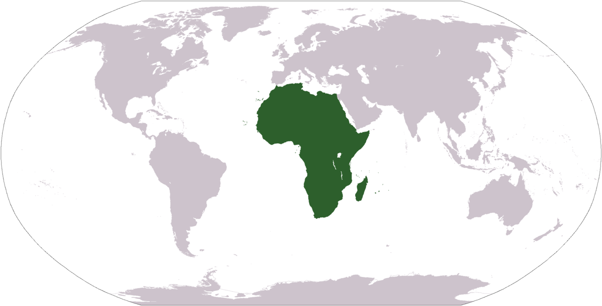
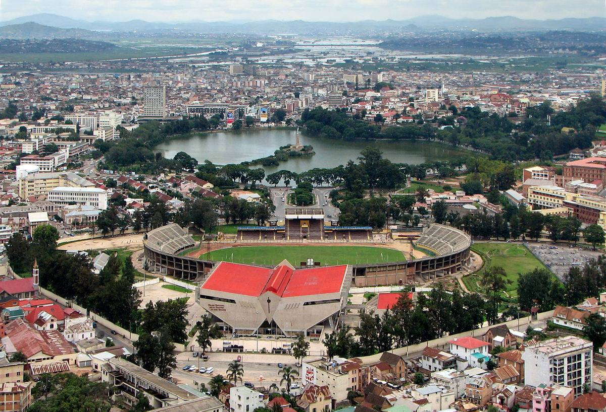
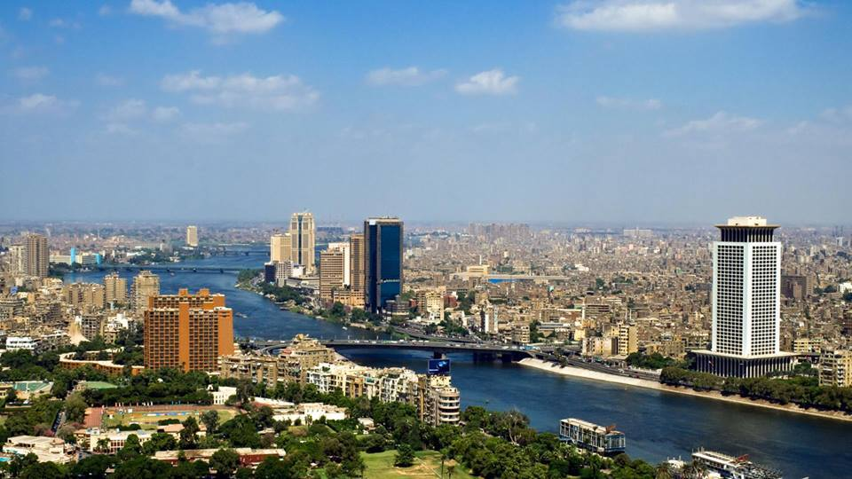
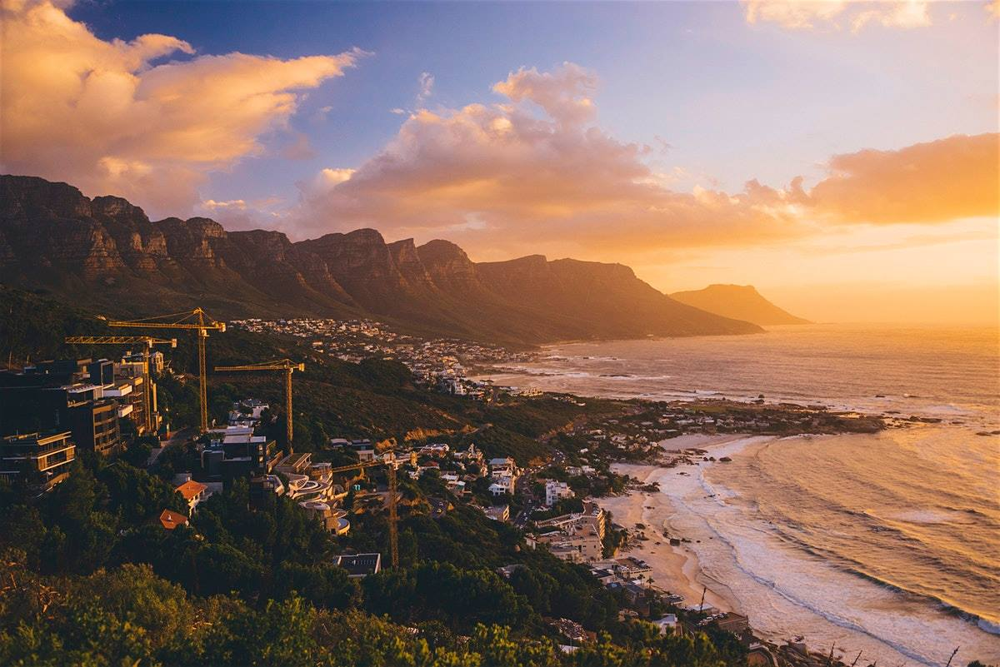
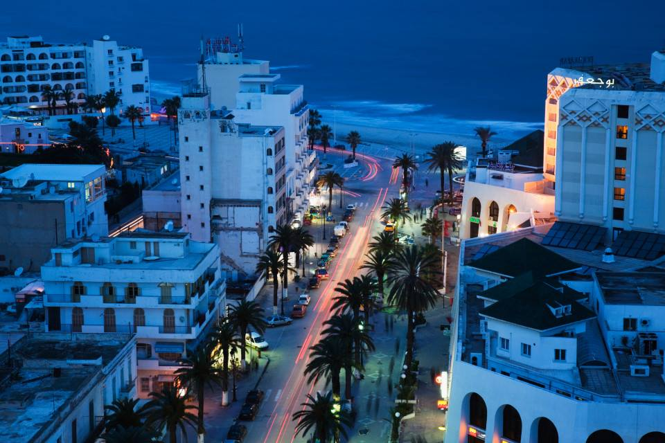

Africa is the world's second-largest and second-most populous continent. At about 30.3 million km2 including adjacent islands, it covers 6% of Earth's total surface area and 20% of its land area. With 1.3 billion people as of 2018, it accounts for about 16% of the world's human population. It hosts a large diversity of ethnicities, cultures and languages. In the late 19th century, European countries colonised almost all of Africa; most present states in Africa emerged from a process of decolonisation in the 20th century.
Antananarivo , also known by its colonial shorthand form Tana, is the capital and largest city of Madagascar. The larger urban area surrounding the city, known as Antananarivo-Renivohitra ("Antananarivo-Mother Hill" or "Antananarivo-Capital"), is the capital of Analamanga region. The city sits at 1,280 m above sea level in the center of the island, the highest national capital by elevation among the island countries. It has more universities, nightclubs, art venues, and medical services than any city on the island. Several national and local sports teams, including the championship-winning national rugby team, the Makis are based here.
Cairo is the capital of Egypt and the largest city in the Arab world. Its metropolitan area, with a population of over 20 million, is the largest in Africa, the Arab world, and the Middle East, and the 15th-largest in the world. Cairo is associated with ancient Egypt, as the famous Giza pyramid complex and the ancient city of Memphis are located in its geographical area. It has the oldest and largest film and music industries in the Arab world, as well as the world's second-oldest institution of higher learning, Al-Azhar University. Many international media, businesses, and organizations have regional headquarters in the city; the Arab League has had its headquarters in Cairo for most of its existence.
Cape Town is the legislative capital of South Africa. Colloquially named the Mother City, it is the largest city of the Western Cape province. It forms part of the City of Cape Town metropolitan municipality. Located on the shore of Table Bay, Cape Town, as the oldest urban area in South Africa, was developed by the United East India Company as a supply station for Dutch ships sailing to East Africa, India, and the Far East.
Tunis is the capital and largest city of Tunisia. The greater metropolitan area of Tunis, often referred to as "Grand Tunis", has about 2,700,000 inhabitants, making it the third-largest city in the Maghreb region (after Casablanca and Algiers) and the sixteenth-largest in the Arab world. Situated on a large Mediterranean Sea gulf (the Gulf of Tunis), behind the Lake of Tunis and the port of La Goulette (Ḥalq il-Wād), the city extends along the coastal plain and the hills that surround it.
